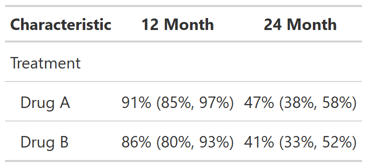
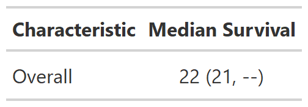

![[Experimental]](../help/figures/lifecycle-experimental.svg) Function takes a
Function takes a survfit object as an argument, and provides a
formatted summary table of the results
| tbl_survfit {gtsummary} | R Documentation |
Function takes a survfit object as an argument, and provides a
formatted summary table of the results
tbl_survfit(
x,
times = NULL,
probs = NULL,
statistic = "{estimate} ({conf.low}, {conf.high})",
label = NULL,
label_header = NULL,
estimate_fun = NULL,
missing = "--",
conf.level = 0.95,
failure = FALSE
)
x |
survfit object. Object may have no stratification
(e.g. |
times |
numeric vector of times for which to return survival probabilities. |
probs |
numeric vector of probabilities with values in (0,1) specifying the survival quantiles to return |
statistic |
string defining the statistics to present in the table.
Default is |
label |
string specifying variable or overall label. Default is
stratifying variable name or |
label_header |
string specifying column labels above statistics. Default
is |
estimate_fun |
function to format the Kaplan-Meier estimates. Default is style_percent for survival probabilities and style_sigfig for survival times |
missing |
text to fill when estimate is not estimable. Default is |
conf.level |
Confidence level for confidence intervals. Default is 0.95 |
failure |
Calculate failure probabilities rather than survival probabilities.
Default is |
Example 1

Example 2

Daniel D. Sjoberg
library(survival)
fit1 <- survfit(Surv(ttdeath, death) ~ trt, trial)
fit2 <- survfit(Surv(ttdeath, death) ~ 1, trial)
# Example 1 ----------------------------------
tbl_survfit_ex1 <- tbl_survfit(
fit1,
times = c(12, 24),
label = "Treatment",
label_header = "**{time} Month**"
)
# Example 2 ----------------------------------
tbl_survfit_ex2 <- tbl_survfit(
fit2,
probs = 0.5,
label_header = "**Median Survival**"
)